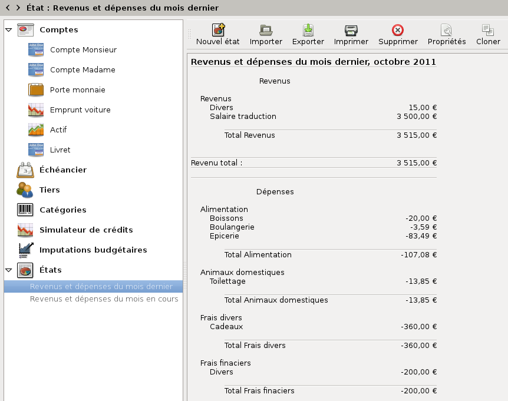

Grisbi vous permet de créer des états de comptabilité. Un état représente un statut actuel de vos comptes, formaté selon certains critères, entièrement choisis par l’utilisateur. Cela rend cette fonction entièrement personnalisable et très puissante.
Grisbi tient compte de toutes les données de votre fichier de comptes, y compris les archives. Vous pouvez choisir la période de temps, les comptes, les tiers, les catégories, les imputations budgétaires, les modes de règlement, le caractère rapproché ou non des opérations, les (sous-) opérations ventilées, etc. En fait toutes les informations décrivant une opération peuvent servir de critère de tri. Vous pouvez ensuite organiser hiérarchiquement l’affichage de l’état ainsi défini, par comptes, tiers, catégories ou imputations budgétaires, ajouter des séparations, et enfin afficher des libellés de données, des totaux ou sous-totaux au choix, et des données quelconques des opérations.
Par exemple, vous pouvez afficher la liste de toutes les dépenses d’un mois tous comptes confondus, ou toutes les opérations d’une catégorie sur une année, etc. Vous pouvez ajouter et enchaîner pratiquement autant de critères qu’il y a d’informations décrivant une opération, de façon à obtenir tous types de représentations imaginables.
L’onglet États sert à créer des états et à mémoriser tous leurs paramètres, ce qui permet de les réafficher ultérieurement à la demande.
La liste des états existants s’affiche dans le panneau de navigation en cliquant sur le petit triangle à gauche de l’onglet États. Tant que vous n’avez pas créé vous-même au moins un état, cette liste est vide.
Note : ces triangles peuvent être remplacés, en fonction du thème de l’environnement de bureau ou du gestionnaire de fenêtres que vous utilisez, par d’autres caractères tels que +, -, >, <, etc.
Pour avoir accès à la gestion des états, déroulez d’abord la liste des états dans le panneau de navigation en cliquant sur le petit triangle, puis cliquez sur un des sous-onglets, ou déplacez-y la sélection avec les touches du clavier <Flèche Haut> <Flèche Bas>, <Page Haut> ou <Page Bas> ou avec la molette de la souris, ou encore, sélectionnez États en cliquant sur l’un des deux petits triangles à gauche de la barre d’information, et faites défiler les différents items (voir le chapitre 4, Accueil).
Le pavé des détails affiche deux éléments :
La barre d’outils des états présente les fonctions suivantes :
La barre d’outils peut être déplacée dans l’écran en cliquant sur sa poignée (petit rectangle vertical à gauche de la barre) et en la déplaçant. Pour la réattacher à son emplacement d’origine dans le pavé des détails, la remettre en haut de la fenêtre, le haut de la poignée sur le petit trait qui visualise sa place d’origine.
Pour sélectionner un état, vous avez deux moyens :
Note : ces triangles peuvent être remplacés, en fonction du thème de l’environnement de bureau ou du gestionnaire de fenêtres que vous utilisez, par d’autres caractères tels que +, -, >, <, etc.
Note : les états ne peuvent être listés que si la liste est déroulée dans le panneau de navigation.
Note : tant que vous n’avez pas créé vous-même au moins un état, cette liste est vide.
Le nom de l’état apparaît alors dans la barre d’information, et, dans le panneau de navigation, sur fond bleu. Le contenu de l’état s’affiche dans le pavé des détails.

Figure 20.1: Onglet des états
L’affichage se présente de la manière que vous avez définie au moment de la création de l’état. Il est toujours possible de le modifier (voir la section 20.6, Modification d’un état).
Grisbi fournit par défaut plusieurs états préformatés que vous pouvez utiliser tels quels, ou bien comme base pour créer les vôtres. Ils sont accessibles à partir de la fonction Nouvel état et sont les suivants :
Pour créer un nouvel état, consultez le chapitre 21, Création d’un état. La procédure complète de création d’un état et de sa personnalisation est explicitée en détail dans les différentes sections de ce chapitre.
Pour modifier un état, procédez comme suit :
La modification peut se ramener à changer le compte pour lequel vous voulez établir cet état, mais elle peut aussi représenter quelque chose de beaucoup plus complexe. Pour plus de précisions, voir la section 21.2, Sélection des données.
Pour cloner un état, procédez comme suit :
Grisbi duplique intégralement l’état d’origine, y compris son nom ; le clone de l’état apparaît en grisé à la fin de la liste des états dans le panneau de navigation ; la première chose que vous devrez faire sera de lui donner un nouveau nom (voir la section 21.4.1, Généralités).
Pour supprimer un état, procédez comme suit :
Attention : si vous validez la suppression, l’état sera détruit irrémédiablement ; cette opération est irréversible.
En plus des états préformatés et de ceux que vous pouvez créer vous-même, Grisbi vous permet d’exporter ou d’importer des états créés dans un autre fichier de comptes.
Pour importer un état, procédez comme suit :
Attention : d’une manière générale, il est déconseillé d’avoir des accents ou des espaces dans les noms des répertoires et fichiers utilisés par Grisbi. Si c’est le cas, renommez-les maintenant. Par exemple, les espaces peuvent être remplacées par des tirets bas (_).
Vous pouvez ensuite personnaliser le nouvel état importé. Il est probable que vous ayez au moins à vérifier si le nom des comptes sélectionnés est correct.
Pour exporter un état, procédez comme suit :
Note : le format du fichier est par défaut le format des pages web (.html), mais on peut choisir aussi le format natif de Grisbi (.egsb), ou encore un format de texte (CSV).
Dans le cas d’une exportation en format HTML, le fichier est conforme à la norme XHTML 1.0, ce qui devrait garantir son bon affichage par les navigateurs modernes. Il est également encodé en Unicode, ce qui peut causer des problèmes auprès des navigateurs web qui ne sont pas configurés correctement pour auto-détecter le contenu d’une page web.
Pour imprimer un état, procédez comme suit :
En fonction de votre gestionnaire d’impression, vous pourrez disposer de réglages divers tels que la taille et l’orientation de la feuille, la résolution, la police d’impression et sa taille, etc.